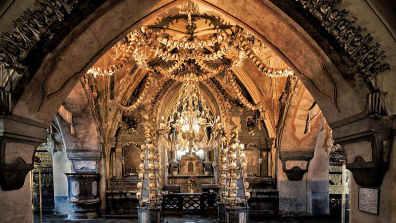

La región de Bohemia Central (en checo: Středočeský kraj) es una unidad administrativa (kraj) de la República Checa, situada en la parte central de la región histórica de Bohemia. Su centro administrativo es la capital de la República Checa, Praga, que está situada en el centro de la región. La ciudad, sin embargo, no forma parte de esta región sino que tiene la suya propia.
Las cuevas de Koněprusy descubiertas en 1950
Una de las ciudades mas emblemáticas y conocidas por los turistas es la ciudad de Kutná Hora (Patrimonio de la UNESCO): Famosa por su pasado como centro de minería de plata, Kutná Hora cuenta con impresionantes monumentos góticos como la Catedral de Santa Bárbara y el Osario de Sedlec (la "Iglesia de los Huesos").
Iglesia de los Huesos en Kutná Hora
Su centro histórico es encantador, con calles empedradas y edificios bien conservados. Esta región tambien cuenta con uno de los castillos más emblemáticos de la República Checa, construido en el siglo XIV por el emperador Carlos IV para albergar las joyas de la corona bohemia y las reliquias sagradas. Su ubicación en lo alto de una colina boscosa lo hace particularmente pintoresco.
Castillo de Křivoklát
El castillo de Křivoklát es un castillo de estilo gótico situado en un entorno natural boscoso. Ha servido como residencia real y prisión, y su arquitectura y la naturaleza circundante son muy atractivas.